SAFARI
Users
General & History
The first identifiable rodents date from the early Paleocene, about 64 million years ago. Most of the modern groupings were established by the end of the Eocene, about 33 million years ago.
Rodents are characterized by a pair of very large incisor teeth that grow continuously and are kept under control by gnawing on stuff. There is a long gap and then just a few side teeth. Most are strictly vegetarian, but a good number are not so vegetarian and a few are fairly carnivorous.
Varieties
While there are at least 2277 species of rodent, only a few appear on the dinner table, and even fewer on the North American dinner table. Here we will consider only those commonly eaten or outstandingly interesting for some other reason. All rodents (and rabbits) are forbidden by Judaic and Islamic dietary laws, but other cultures are far more flexible on that issue.
Rabbit, Jackrabbit & Hare
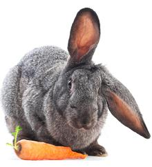
[Cony (archaic), (family Leporidae), Oryctolagus cuniculus (European rabbit), Sylvilagus species (American cottontail rabbit), Lepus species (Hares and Jackrabbits)]
Popularly, rabbits are thought of as rodents, but they actually belong to order Lagomorpha, not Rodentia - though the two orders are more closely related than once thought. All domesticated and pet rabbits are of the single European species (O. cuniculus), found wild all across Europe and now Australia where it has become quite the pest.
American cottontail rabbits range from parts of South America through
pretty much all of North America. While often hunted for food, they are
not farmed. Hares and Jackrabbits (genus Lepus) are similar to
rabbits but generally have longer ears, run faster and do not burrow.
Like cottontails, they are hunted but not farmed.
Details and Cooking
Photo © i0092
Beaver
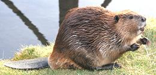 [Castor canadensis (American beaver), Castor fiber (European beaver)]
Beavers are large aquatic rodents noted for building dams that create extensive ponds blocking fast moving streams. There are two extant species of beaver, and one extinct one that weighed nearly 500 pounds. C. fiber had a brush with extinction due to harvesting for its testicles and glands for medicinal purposes. Today it is being actively reintroduced throughout Europe but is still rated NT (Near Threatened).
Although heavily harvested in the past for its pelts, particularly for making beaver hats, American beavers are doing well and rated as LC (Least Concern). Beaver dams are of great importance ecologically, particularly for maintaining salmon runs.
Beaver is no longer much eaten (well, Castor isn't, anyway),
but at the height of the fur trade it was available and cheap. It was
particularly attractive to Catholics because the Church had declared
beaver to be a fish, thus beaver could be eaten on meatless Fridays and
during Lent. Today it'd be a major project to get some beaver meat -
where it is available it's sold mainly to mink farms.
Photo © i0093
Suborder Hystricomorpha
This "Porcupine-like" Suborder has not always been considered Rodents, but recent evidence does place them there. Some are called "rats", but they are definitely not rats. They are divided into New World and Old World species. All originated in Africa, but a bunch of them rafted over to South America when the continents were much closer.
Agouti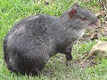 [Dasyprocta fuliginosa (Black Agouti) | Dasyprocta leporina (Red Rump Agouti) | Dasyprocta punctata (Central American Agouti) | all of family Dasyproctidae]
These rodents are common in north central South America, with C.
punctata extending as far north as southern Mexico. They are
fairly large, with punctata growing to a little over 9 pounds,
while leporina and fuliginosa grow to a little over 13
pounds. They are hunted within their ranges, but are difficult to
raise in captivity. While there are other Agouti that are less common,
those we list here are all IUCN red list rated LC (least concern).
Photo of Black Agouti by T-34-85 contributed to the
Public Domain.
Cane Rat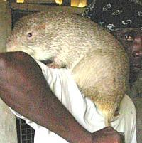 [Grass cutter, Thryonomys swinderianus (greater cane rat) | Thryonomys gregorianus (lesser cane rat) | both of family Thryonomyidae] Cane rats live in most of sub-Saharan Africa, and are considered serious agricultural pests, particularly around cane plantations. They grow as large as 22 pounds, and despite hunting, their numbers may be increasing due to human farming activity. Cane rats are eaten in West and Central Africa and are appreciated
for their tender, high protein low fat meat. A breeding program has
been established, and several African governments are encouraging
farming them. The best substitute easily available in North America
is probably Rabbit.
Photo copyright
Auréelia Zizo permission with attribution.
Capybara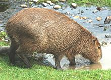 [Capibara, Chiguiro, Carpincho (Spanish); Capivara (Portuguese); Hydrochoerus hydrochaeris] Native to South America, the capybara is the largest rodent alive today and grows to over 140 pounds. Extinct capybaras were much larger with Josephoartigasia monesi exceeding 2200 pounds. Capybaras are doing well today and have a conservation status of LC (Least Concern), though hunting them has been restricted in some areas where populations have declined. Capybaras are semi-aquatic, living in most of South America but
avoiding the Andes mountains. They are easy going and allow people to
pet them, but they do not make good pets because they are unhappy taken
from their family and they occasionally bite and get pushy.
Details and Cooking.
Photo © i0094
.
Dassie Rat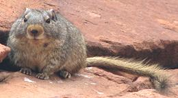 [Petromus typicus of family Petromuridae] Dassies are called "rock rats", but, while they are rodents, they are not rats. They live near the west coast of South Africa, and grow to about 10 ounces. I have included them here because there is a possibility of
confusion. There are two "dassies" in South Africa, one of which
was much eaten by early Dutch settlers, but that one was the
Rock Hyrax (Procavia
capensis), which can grow to a little more than 8 pounds (much
more edible). The Hyrax looks much like a rodent, but it's closest
relatives are the Elephants and Marine Mammals (Sirenia).
Photo by Harvey Barrison distributed under license
Creative Commons
Attribution-ShareAlike v2.0 Generic.
Desmarest's Hutia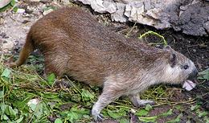 [Capromys pilorides of family Capromyidae] This fairly large rodent is native to the islands of the Cuban archipelago in the Caribbean. Growing to 19 pounds, it is hunted for food on the islands. They have at times been raised in captivity as miniature livestock, and encouraging this is being officially considered. Despite its small range and human predation, this Hutia is
numerous and IUCN rated LC (Least Concern). Hunting them is licensed
and regulated. Unfortunately there were no regulations when there
were giant Hutia, up to 440 pounds. It is possible one species may
still have been alive around the time the Spanish arrived.
Photo by BluesyPete distributed under license
Creative Commons
Attribution-ShareAlike v3.0 Unported.
Guinea Pig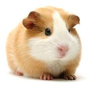 [Cuy, Cuyo, Cuni, Cobayo, Conejillos de Indias (South America); Cavy; Cavia porcellus of family Caviidae] These rodents are native to the Andean region of South America (Ecuador, Peru, Bolivia and Colombia) - they don't come from Guinea and they aren't pigs. Guinea pigs have been domesticated for probably 7000 years by tribes in the Andean region. C. porcellus is no longer found in the wild, but several of its near relatives are. Andean households routinely breed guinea pigs for consumption, feeding
them vegetable scraps, but to most of the world they are cute, docile,
easy to care for pets. Guinea Pigs are moderate size rodents. Pet
varieties usually weigh between 1.5 and 2.5 pounds, but meat varieties
weigh up to 4 pounds. Details and
Cooking. Photo ©
i0095
Nutria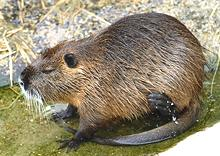 [Coypu (Spanish); Myocastor coypus] Native to southern South America, the nutria is yet another semi-aquatic rodent that has been spread worldwide for its formerly valuable fur. Now it is a very serious pest and destroyer of wetlands in the US, Europe and Asia. Nutria is still being promoted as a get rich scheme - you buy expensive breeding pairs, raise a lot of nutrias and sell the furs and meat to get rich. Of course the market never materializes. Nutria are fairly large, weighing up to 20 pounds, and the meat
is nutritious, low fat and high protein, similar to guinea pig. Taste
and texture are said to be quite similar to rabbit. Unfortunately,
the only places there are markets for the meat is in Kyrgyzstan and
Uzbekistan, and there it's sold to people too poor to afford other
meats. Nutria were first introduced to California, but eradicated
here, and several other states have high profile eradication efforts
because of the serious ecological damage they cause. Unfortunately,
California is experiencing another costly invasion (2018). To help
control them, there are also serious efforts to commercialize Nutria
meat for human consumption. They need to get a couple of big name
TV chefs behind this - surely it can be sold to yuppies for a premium
price. It has also been successfully tested as an ingredient in dog
food. Photo ©
i0096.
Paca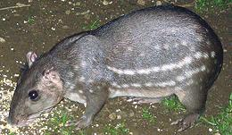 [Cuniculus paca (lowland Paca) | Cuniculus taczanowskii (Highland Paca) | both of family Cuniculidae]
These rodents, native to cloud forests and rain forests of Central
and South America, can weigh up to 31 pounds (C. paca).
Paca meat is considered a delicacy, so they are hunted for food
throughout their range. Commercial farming is being considered, since
their meat can fetch a premium price.
Photo by Dick Culbert distributed under license
Creative Commons
Attribution-ShareAlike v2.0 Generic.
Porcupine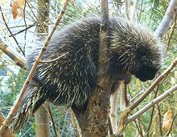 [families Erethizontidae (New World) | Hystricidae (Old World) of suborder Hystricomorpha] Porcupines probably originated in Africa, then infested South America, finally making it to North America about 3 million years ago when Panama rose out of the sea. They are considered good eating throughout their range. The most common culinary varieties, all of which are IUCN rated "Least Concern", are: North American:(Erethizon dorsatum) Native to forests from northern Mexico to Alaska. Arboreal and partially nocturnal, they can grow to 40 pounds, but are usually around 20 pounds. They are not farmed or sold in markets due to handling difficulties. Photo by Mattnad (cropped) distributed under license Creative Commons Attribution-ShareAlike v3.0 Unported .Crested Porcupine:(Hystrix cristata) Native to Italy, North Africa and parts of Sub-Saharan Africa, these are mostly nocturnal. They can weigh up to 60 pounds, and are widely eaten by humans within their range.Cape Porcupine:(Hystrix africaeaustralis) Native from the southern tip of Africa as far north as Congo, these are mostly nocturnal. Weighing up to 66 pounds, this porcupine was much favored by Dutch settlers in South Africa.Rock Cavy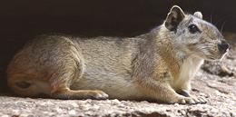 [Mocó Kerodon rupestris of family Caviidae]
These tailless rodents are native to rocky parts of Brazil, where they
can grow to around 2-1/4 pounds. Adult males sometimes display
homosexual behavior, and, like certain high school wrestling coaches
we've heard of, adult males will sometimes court under-age males.
Rock Cavys are common and often hunted by local humans for food.
Photo by MarceloGonçalves Moura Valle distributed
under license Creative Commons
Attribution-ShareAlike v3.0 Unported.
|
Rats - Superfamily Muroidea
Many animals called "Rat" are not really rats, and most listed here are not "true rats", but Superfamily Muroidea does include the real rats. Eating rat is strongly forbidden by Judaism and Islam and in some South American cultures. While not forbidden to Christians and other Pagans, they just aren't considered an appetizing idea in Europe and the Americas - though Muskrat has a significant following in North America.
In Asia rat is considered very highly, though it is generally Bandicoot Rat or Bamboo Rat rather than common rat that is eaten. Restaurants in China are now promoting rat (2011) because they've already cooked and served all the snakes that ate rats, so rats are plentiful now. Gives a new meaning to "ratatouille", it does.
Rice Rat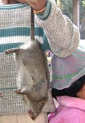 [Bandicoot Rat, Rice field rats, Bandicota bengalensis (lesser bandicoot rat), Bandicota indica (greater bandicoot rat) - all of family Muridae]
The Lesser Bandicoot Rat, not the common rat, is the rat eaten
in Southeast Asia and southern China. Not related to the real
bandicoot (an Australian marsupial), they are major pests in rice and
wheat fields throughout Southeast Asia and India. While they are
hunted, trapped and eaten in great quantity, conservation status is
LC (Least Concern) because they breed at an astonishing rate.
The Greater Bandicoot Rat's range extends into India.
Details and Cooking
Chinese Bamboo Rat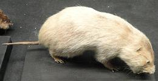 [Rhizomys sinensis of family Spalacidae]
This rat, native to a large part of China, lives mainly on bamboo
roots and shoots. Living under ground in well designed burrows with
numerous lightly plugged escape routes, It is fairly large and can
grow to over 4 pounds. It's natural predators are snow leopards and
red pandas, but it's most dangerous predator is humans hunting it
for food. Despite this it is still numerous and IUCN red listed LC
(Least Concern).
Photo by Daderot contributed to the Public Domain.
.
Common Rats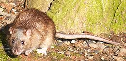 [Roof rat, Ship rat, Black rat, Rattus rattus | Brown rat, Sewer rat, Norwegian rat, Common rat, Wharf rat, Rattus norvegicus | all of family Muridae] Native to tropical Asia (R. rattus) and China (R. norvegicus), rats had spread throughout the Old World by Roman times, and throughout the rest of the world aboard European ships in the 1500s. Here in Los Angeles we have roof rats (mostly medium gray) but in cooler parts of North America the much larger brown rat predominates (photo). The various strains of laboratory rats were developed from R. norvegicus. While despised as filthy in the wild, rats kept as pets are found
to be clean, friendly and intelligent. Most pet rats are fancier
breeds of R. norvegicus. Common rat is not much cooked except
in extreme circumstances because it's just not meaty enough to bother
with. Details and Cooking.
Photo by Ross distributed under license
Creative Commons
Attribution-ShareAlike v2.0 Generic.
Muskrat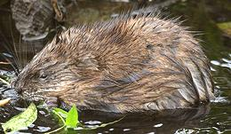 [Musquash; Swamp Rabbit; Ondatra zibethicus] Muskrats are semi-aquatic rodents native to North America, but were introduced into Europe in the early 1900s for their then valuable fur. Since then they have spread all the way from France to Kamchatka and are well established in that range. They have also been introduced to some ranges in South America. They are considered serious pests in Holland and Belgium because they dig big holes in dikes, but otherwise don't seem to be much of a problem. Not true rats, but related to hamsters and lemmings, muskrats
are medium size, weighing up to 4 pounds and about 13 inches long, plus
11 inches of tail. The tail is scaly and flattened, but vertically, not
horizontally like the beaver. Muskrats may dig burrows to live in, or
may build lodges similar to those of beavers, but made from lighter
materials. They are another animal permitted on meatless Fridays and
Lent because the Catholic Church has classified them as fish.
Muskrats are plentiful and IUCN rated LC (Least Concern). Cooking
Muskrat so it is edible requires unusual and very specific steps.
Details and Cooking.
Photo by Alan D. Wilson distributed under license
Creative Commons
Attribution-ShareAlike v2.5 Generic.
|
Squirrel
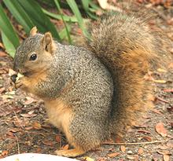 [Fuzzy tailed tree rat; family Sciuridae]
Squirrels are divided into tree living (arboreal) and burrowing ground squirrel categories. Some of the arboreal varieties are known as "flying squirrels" because they've developed large flaps of skin that allow them to glide from tree to tree. Flying squirrels are too small to be of culinary interest.
The photo is of an eastern fox squirrel, the largest North American arboreal squirrel, weighing as much as 2.2 pounds. This squirrel and the very similar eastern gray squirrel are large, aggressive and adaptable. Due to human introduction into non-native ranges in both North America and Europe, they threaten to drive all other arboreal squirrels to extinction.
Technically, Woodchucks and other marmots are oversize burrowing ground squirrels, but we'll treat them separately here. The smaller ground squirrels are not generally of culinary interest.
Squirrel was once significant in American cooking, particularly in the
Southeast, but has fallen out of favor due to the inconvenience of
shooting and dressing the squirrels - people just don't have time for that
any more. Details and Cooking
Photo by
Aaron Logan
distributed under
Creative Commons Attribution 1.0.
Marmot
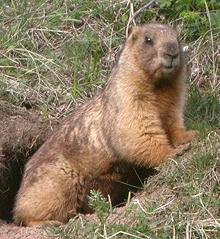 [Tarbagan marmot; Marmota sibirica | Gray marmot, Altai marmot; Marmota baibacina]
These two Marmots have an overlapping range from Kazakhstan through
southwest Siberia, Mongolia and northwestern China. They usually weigh
between 9 and 14 pounds, but can weigh up to 18 pounds when nearing
hibernation. There are other Marmots not listed here because I have no
evidence of them being much eaten by people today, though the
Yellow-bellied Marmot of the U.S. Northwest was probably eaten by
Native Americans of the region in times past. Today, the Woodchuck is
the only Marmot much eaten in North America.
Details and Cooking
Photo by Alastair Rae distributed under license
Creative Commons
Attribution-ShareAlike v3.0 Unported.
Woodchuck / Groundhog
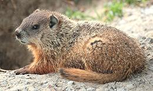 [Whistlepig, Pasture pig; Wuchak (Algonquian); Marmota monax]
Woodchucks are large Marmots that live from central Alaska, down through Minnesota, south to Arkansas and Georgia, and as far north as Newfoundland, but they avoid all the Western states. They prefer moist grassland near forests. They can grow to 31 pounds under ideal conditions, but are usually between 4 and 9 pounds.
Woodchucks are most often considered garden and farm pests, but are
also considered good eating by many people living within their range,
Details and Cooking
Photo by Cephas distributed under license Creative Commons
Attribution-ShareAlike v3.0 Unported.
Health & Nutrition
The more popular culinary rabbits and rodents are low in fat and good sources of protein. Aquatic varieties may be a bit fattier.
Wild rodents sometimes carry diseases, but those grown commercially should not be a problem. Any wild rodents that are not strictly vegetarian should be cooked to a minimum internal temperature of 165°F/74°C to avoid trichinosis and other diseases.
Rabies and Plague are possibilities with wild rodents, but not usually a major problem in North America. Here in Southern California, we do occassionally get warnings that some wild squirrels have been found with the Plague.